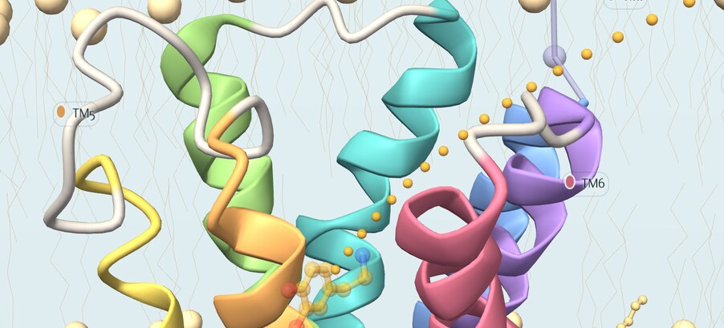
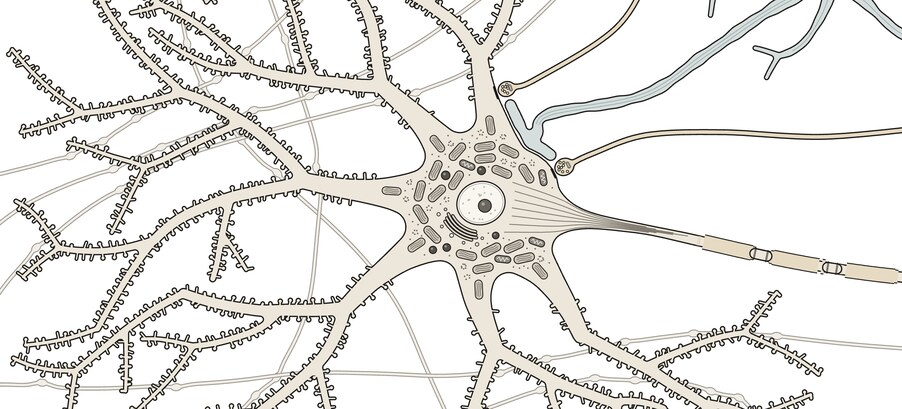
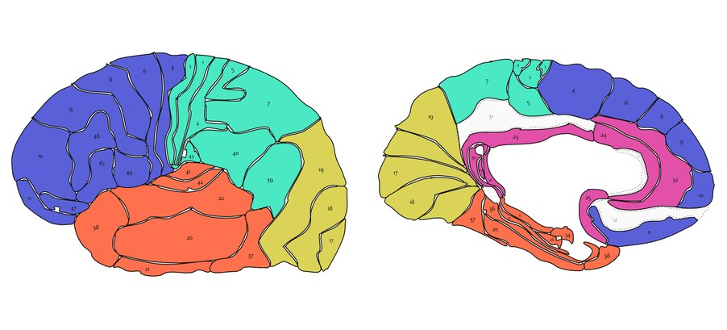
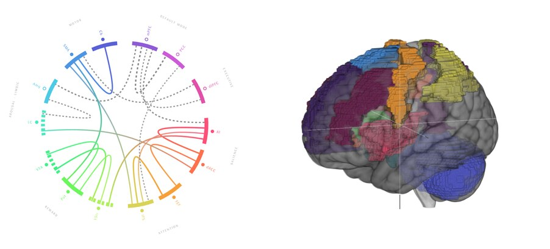
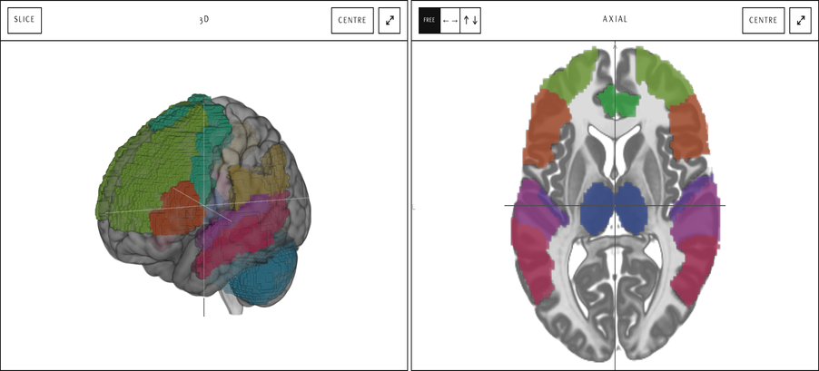

三维脑区图谱
一套详尽的人脑三维图谱，附受体密度图，并逐一解析每个脑区的功能、相关疾病，以及损伤研究所揭示的情况。


纤维束成像
白质中的百万条纤维通路，取自 HCP1065 群体平均数据，以完整三维呈现。

分子
多巴胺与 5-羟色胺受体的三维结构，以及与之结合的递质和药物。


显微解剖
细胞尺度下的神经元及其突触，细至神经递质及其受体。


布罗德曼分区图谱
布罗德曼的 41 个皮层分区，绘于大脑半球外侧面与内侧面的图上。点按任一分区，旁边即显示其功能。


脑网络图谱
大脑的大尺度网络在六种状态下的变化，从心流到冥想，映射在扫描图像上。


研究可视化
已发表的神经影像研究，逐个脑区直接绘制在大脑上。


神经科学练习
按伦敦国王学院神经科学硕士课程大纲设计的自适应选择题复习。

数字教科书
OpenStax 完整版《行为神经科学导论》（Introduction to Behavioral Neuroscience），收录于本站页面中（英文）。

海报
两张源自显微解剖页面的 A1 印刷海报：一张以统一比例绘出每种神经递质，另一张展示各种受体及其与递质结合的紧密程度。

MCP 服务器
通过 MCP 服务器，在你选用的 AI 中使用本图谱。任何支持模型上下文协议（Model Context Protocol）的助手都能向图谱提问：某个脑区的功能、某种受体在何处密度最高，或大脑在某种状态下如何变化；每条回答都附有链接，直达所描述的视图。
即将推出
正在开发的三项功能，目前都尚未开放。
- 环路图谱在三维脑区图谱上绘出信号的流动：动画路径在脑区之间穿行，让幻觉研究中那样的神经环路在大脑上演示出来。
- 脑区详解依据研究文献，为每个脑区撰写详细的功能解析，比图谱现在给出的一句话简介更深入。
- 扩展的 MCP 服务器为你选用的 AI 提供新工具：环路图谱中的通路与详细的脑区解析，可在任何支持该协议的助手中获取。
开发者寄语


频道
这里的一切都在网页中运行：影像体数据、图谱和纤维束图都以文件形式提供，并在你自己的设备上渲染，因此你浏览的内容不会离开你的设备。渲染引擎为 NiiVue（Rorden 实验室）· MNI152 模板 · AAL 图谱 · 字体为 Flux、Newsreader 与 Prata · © 2026 VisualNeuroscience.AI 关于 · 隐私与支持 · 使用条款。